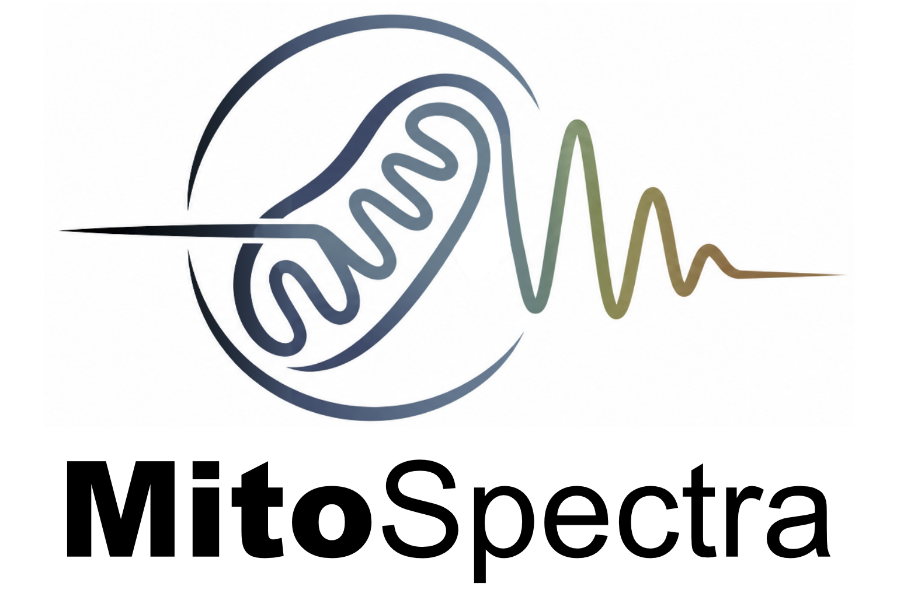

MitoSpectra
Website under construction
MitoSpectra is a non-invasive optical sensing technology, designed to monitor mitochondrial function and metabolic health in real time. Its applications span organ transplantation, critical care, human health and wellness, and plant monitoring, providing actionable insights into cellular metabolism, physiological stress and biological resilience across sectors.
Research and development stage. Operated by a registered New Zealand sole trader · NZBN 9429054031869 · Trade mark protected.
Founded by Dr. Jules Devaux
